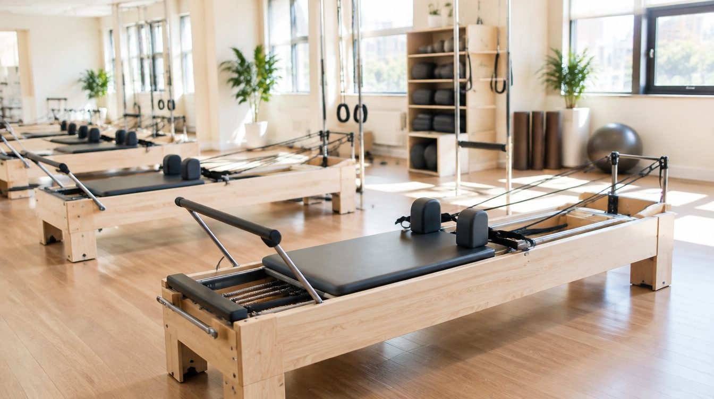

프로그램 안내
시간 확인 필요

FIND YOUR PRACTICE
운동 경험에 맞는 시작.

PROGRAM NOTE나의 움직임을
나의 움직임을
이해하는 시간.
운동 경험과 목표를 듣고 진행 방식을 상담하는 개인 레슨 안내 예시입니다. 실제 지도 범위와 담당자는 확인이 필요합니다.
효과·통증 개선·체형 변화 등을 보장하지 않습니다.
WEEKLY RHYTHM
운동을 일상에 놓는 방법.
실제 개설 시간표가 아닌 수업 편성 UI 예시입니다. 요일별 운영 여부와 예약 조건 확인이 필요합니다.
레슨 일정 상담
정원 확인 필요
프로그램 안내
시간 확인 필요
레슨 일정 상담
정원 확인 필요
프로그램 안내
시간 확인 필요
YOUR FIRST DAY처음에는,
처음에는,
이것만 준비하세요.
운동 경험과 원하는 수업 방식, 방문 가능한 시간을 정리합니다. 복장과 준비물은 실제 시설 안내에 따라 확인해야 합니다.
정보를 저장하거나 외부로 발송하지 않습니다.